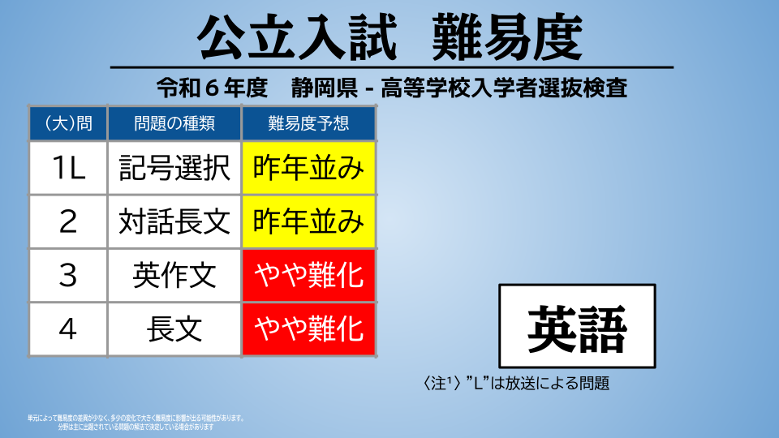
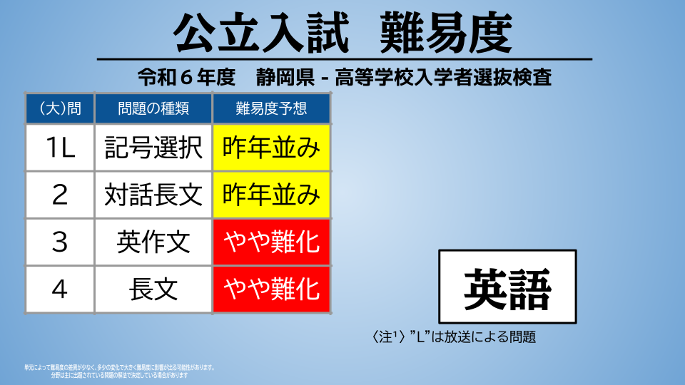

令和７年度入試分析
令和７年度（2025年度）入学試験の難易度について分析しました。
難易度は各教科・大問ごと。
一部端末で画像が表示されない場合があります。対応を随時行います。
ただ今難易度を分析しています。

 


入試評論
ただ今入試評論を作成しています。
作成 : 2025年3月5日
用語解説
難化…昨年と比べ問題が難しい
易化…昨年と比べ問題が易しい
昨年並み…昨年と難易度に概ね変化がない
L（英語）…リスニング問題
平均点と入試分析の推移
過去の偏差値の推移
このサイトで使用した過去の平均点と標準偏差を公開します。
●予告なく終了や中止する場合があります。
●データ利用・閲覧は自己責任となります。ご注意ください。
●現在、試験的にHTML（ページ形式）で公開しています。
PDF┃令和６年度版
入試 平均点・標準偏差の推移 令和６年度版（PDF:103KB）open_in_new
ページ版┃令和６年度版
過去の推移（HTML）open_in_new
※新しいタブで開きます